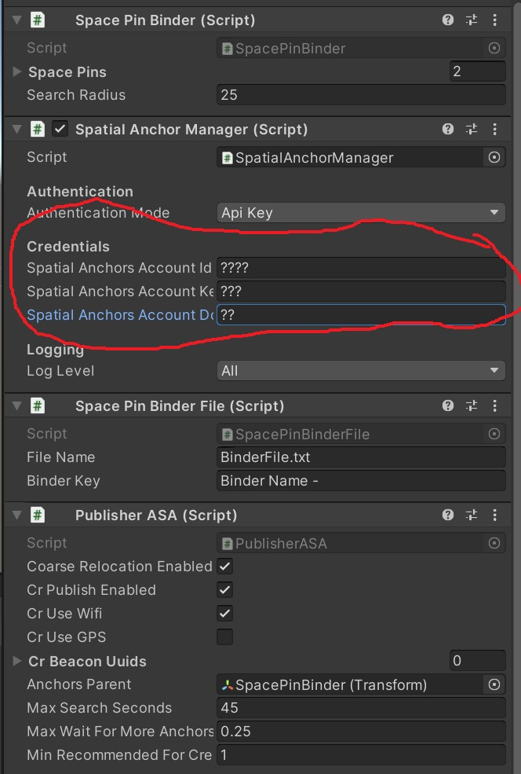
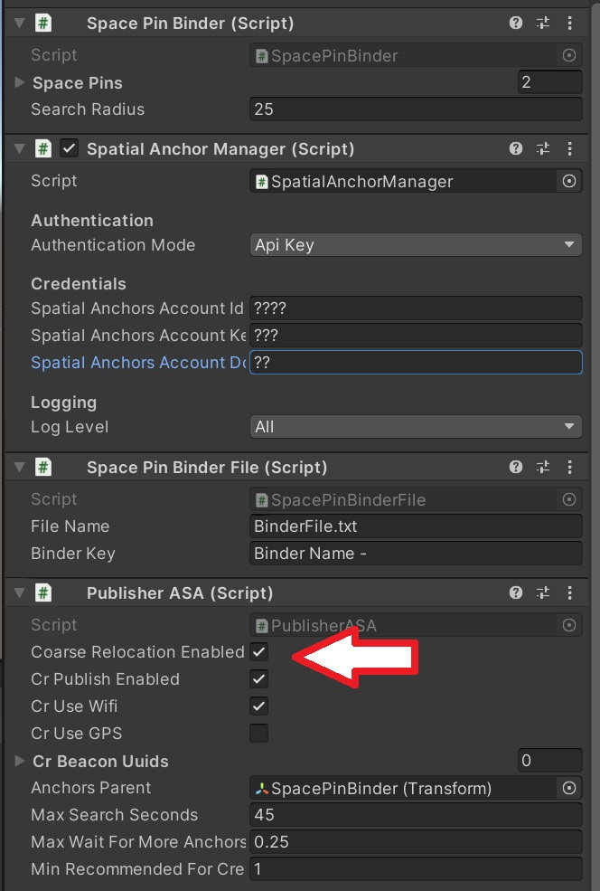
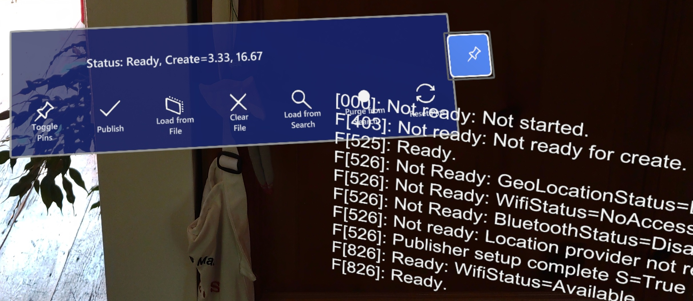
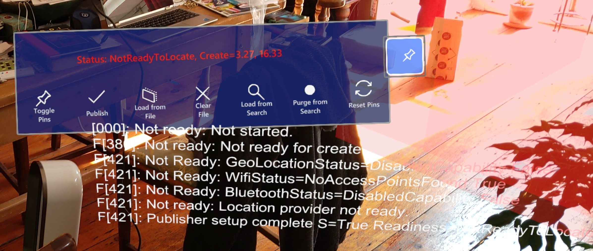

Setting up and running the WLT+ASA samples
Summary
World Locking Tools for Unity (WLT) provides a stable coordinate system based on local tracking. When combined with Azure Spatial Anchors (ASA), that stable coordinate system can be persisted across sessions, and shared across devices.
This video might give you an idea what to expect when running the sample.
What is in this sample?
This sample provides assets and scripts to:
- Configure Unity's global coordinate system with respect to the physical environment.
- Publish that coordinate system configuration to Azure using Azure Spatial Anchors.
- Retrieve the data from Azure to restore the coordinate system in later sessions or on other devices.
Structure of this document
- Setup - How to install and deploy the sample application.
- Notes on running the application, along with suggested steps.
- Architectural description of the supporting scripts.
Setup and tested versions
This sample has been developed and tested using:
- Unity 2020.3.8f1
- Azure Spatial Anchors (ASA) v2.9.0 - v2.10.2.
- Mixed Reality Toolkit v2.7.2
- World Locking Tools for Unity v1.4.1
- FrozenWorldEngine v1.1.1
You can install WLT and this sample either from WLT releases .unitypackage or from the Mixed Reality Feature Tool. Note that if installing from the FeatureTool, you must not only install the WLT Examples dependency (automatic), but also Import the Examples into your project. See Installing WLT from MR Feature Tool for details.
Install the Frozen World Engine DLL into the project
The first step is to install the Frozen World Engine DLL, v1.1.1. Instructions here, using either NuGet for Unity, or command line nuget.exe.
Install ASA
Creating spatial anchor resources
This Quick Start Guide goes through the steps to create an Azure account and the necessary spatial anchors resources. The Account Id, Account Domain, and Account Key will be necessary to run the sample. You will add them into the proper fields on the "Spatial Anchor Manager" script, on the SpacePinBinder object in the scene. Other authentication methods are supported, but the Account Id/Domain/Key is the easiest when getting started.

Install the SDK
Next, install Azure Spatial Anchors v2.9.0 using one of the methods described in these instructions. I used the MR Feature Tool method.
Additional setup for Coarse Relocation
When using Coarse Relocation, additional setup is required when deploying to Android or HoloLens2.
What is Coarse Relocation?
Coarse Relocation is a technology which allows you to search for previously created cloud anchors within your current vicinity. Additional details on Course Relocation can be found in the Course Relocation section of the Azure Spatial Anchors documentation.
This sample demonstrates finding cloud anchors either by Coarse Relocation, or explicitly by cloud anchor id (GUID). If Coarse Relocation is enabled, the following additional setup steps are required. If you aren't interested in Coarse Relocation, you can disable it in the "Publisher ASA" component on the SpacePinBinder object.

Additional setup steps for HoloLens2
To enable Coarse Relocation on HoloLens2, you must add a permission to the Package.appxmanifest file generated into ARM/WorldLockingTools/Package.appxmanifest (assuming you selected the folder ARM as your build target). If this is your own project, substitute the appropriate name for WorldLockingTools in that path. Add the following line into the Capabilities section:
<DeviceCapability Name="wiFiControl"/>
For more information, see this post on github.
If you miss this step, the Publisher "Readiness" will never reach the "Ready" state, your framerate will be extremely low, and your UnityPlayer.log (if generated) will be full of exceptions of the form:
InvalidOperationException: CoarseReloc: WiFi access has been declined. Request CV: . Response CV: .
Note that you will need to add that capability to your Package.appxmanifest each time the solution is built from clean. But subsequent builds from Unity will preserve the capability.
In Project Settings/XR Plugin Management, make sure that Windows Mixed Reality is the selected Plugin-Provider under the UWP tab (OpenXR is also supported for WLT with ASA).
The MRTK profile XAmple XRSDK ToolkitConfigurationProfile in XAmpleApp/CustomProfiles is suitable for running on HoloLens2.
Additional setup steps for Android
To enable Coarse Relocation on Android, follow these instructions to configure the Assets/Plugins/Android/mainTemplate.gradle file.
Also, in the Assets/Plugins/Android/AndroidManifest.xml, a lot of permissions must be enabled in order to allow access to Wi-Fi on Android. Again, if incorporating elements of this project into your own project, you need to follow these steps as well in order to use Coarse Relocation. More details on required permissions to access Wi-Fi on Android are in this post, and the post it links to.
Samples of the modified mainTemplate.gradle and AndroidManifest.xml are included in the WLT-ASA Sample Project, which is configured specifically for using WLT and ASA together. They can be copied directly into your project, after enabling "Custom Main Manifest" and "Custom Main Gradle Template" in the Player Publishing Settings as described.
When you hit Build & Run, if your build fails with a Shader error in the MRTK_Standard material, just try Build & Run again. It works second try for me. There is some info on that in the MRTK issues, but as far as I can tell all the info there is incorrect.
In Project Settings/XR Plugin Management, make sure that ARCore is the selected Plugin-Provider under the Android tab.
The MRTK profile XAmple AR ToolkitConfigurationProfile is suitable for running on mobile. Don't forget to run the script Mixed Reality/Utilities/UnityAR/Update Scripting Defines after switching to Android or iOS.
What the buttons do

- Toggle Pins - When the SpacePins are not active, their manipulation handles may be hidden.
- Publish - Save the current configuration, enabling its retrieval in later session or on other devices.
- Load Oracle - Use previously stored bindings to restore a spatial configuration.
- Clear Oracle - Delete all backing resources, especially Azure spatial anchors, and clear the bindings oracle.
- Search - Find all Azure spatial anchors in the immediate vicinity, and restore the spatial configuration from them.
- Purge - Find all Azure spatial anchors in the immediate vicinity, and clear them.
- Reset Pins - Undo any Space Pin manipulations. Does not clear any Azure spatial anchors.
The menu on mobile is slightly different in form, but button positions and meanings are the same.
Walkthrough - Publish from HoloLens2
Place the scene using SpacePins
When you start up the sample, the coordinate system is position and oriented based on the head tracker pose at startup. Which is to say, it is fairly arbitrary. The first thing to do is to adjust the coordinate system to a desired reference state.
The sofa in the PinTestSofa scene is 2.18 meters long, 0.78m high, and 1.0m deep. The SpacePin handles on each end of the top back of the sofa are, therefore, 2.18m apart, and 0;78m off the ground. I recommend measuring and placing temporary markers 2.18m apart, at some convenient height. Alternatively, you can adjust the scene to fit your physical space.
Having built and deployed the application to a HoloLens2 device, wait until the status on the floating menu says Ready (hint - the status line will go from red to white when ready).

One at a time, grab each of the SpacePin handles (the white wireframe spheres) and drag it into position relative to your reference markers.
After releasing each of the markers into position, the scene should have shifted to restore the back of the sofa relative to the SpacePin. The objects in the scene aren't being moved, the entire coordinate space is adjusted so that the original coordinates of the SpacePins are at the location in the physical world that you dragged them to.
Publish the coordinate space
Having established the space that you want, you can now Publish that space to make it available in later sessions and on other devices.
If using Coarse Relocation, it's a good idea to clear out any previously created cloud anchors at this point. Hit the "Purge from Search" button and wait for that to complete.
Now, on the floating menu, hit the "Publish" button and wait for it to complete.
Walkthrough - Consume from HoloLens2 using Coarse Relocation
Start the application again on a different HoloLens2 device, or on the same device after closing the previous session. When the status shows as Ready, press the "Load from Search" button. When the operation completes, the Unity global coordinate system will have realigned to your physical environment as it was in the previous (Published) session.
Walkthrough - Consume from HoloLens2 using IBindingOracle (SpacePinBinderFile)
When the bindings are published on a device, or when they are restored from search, they are recorded into an IBindingOracle. This sample includes the most basic Oracle, one that simply writes the bindings to a text file.
Restart the application to a new session. If this is the same HoloLens2 as the Publish was performed from, then there is a binding file left from the publish. If this is a different HoloLens2, but a Search was successfully performed in a previous session, then the binding file will be left from that.
Hit the "Load from File" button to load the previously recorded bindings and restore that coordinate space.
Walkthrough - Consume from Android using Coarse Relocation
The UX looks slightly different on Android, but works exactly the same. The main difference is that a little more scanning of the environment at startup is required relative to HoloLens2, before ASA is ready to proceed.
When the system shows as Ready, you can hit the blue button (3rd from right) to search for the previously published bindings and restore the coordinate system.
Walkthrough - Consume from Android using IBindingOracle (SpacePinBinderFile)
Having successfully completed a Load from Search, a bindings file has been left on the device. In later sessions you can just hit Load from File to restore the coordinate system.
Alternatively, you could just copy the bindings text file from the publishing device to the consuming device. The default location of the bindings text file is:
HoloLens2: User Folders/LocalAppData/WLT-ASA/LocalState/BinderFile.txt
Android: Internal shared storage/Android/data/com.WorldLockingTools.WLTASA/files/BinderFile.txt